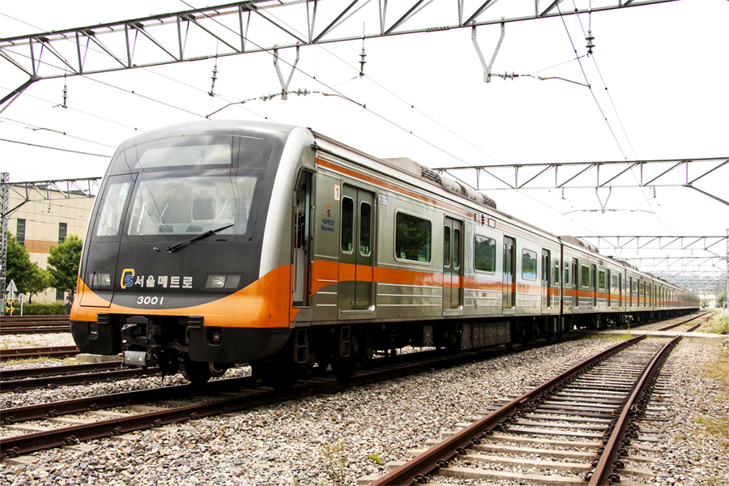

서울의 아름다움을 보다 많은 사람들이

'택도없조'는 서울의 아름다움을 널리 알리고 싶어 시작하였습니다.
오늘도 다양한 서울의 아름다움을
학생도 노약자도 여행객도 몸이 불편한 사람도 누구나 이용하기 쉬운 지하철과 함께 찾아갑니다.
본 사이트는 서울 시청 · 서울 메트로와 함께 합니다.
'택도없조'는 서울의 아름다움을 널리 알리고 싶어 시작하였습니다.
오늘도 다양한 서울의 아름다움을
학생도 노약자도 여행객도 몸이 불편한 사람도 누구나 이용하기 쉬운 지하철과 함께 찾아갑니다.
본 사이트는 서울 시청 · 서울 메트로와 함께 합니다.